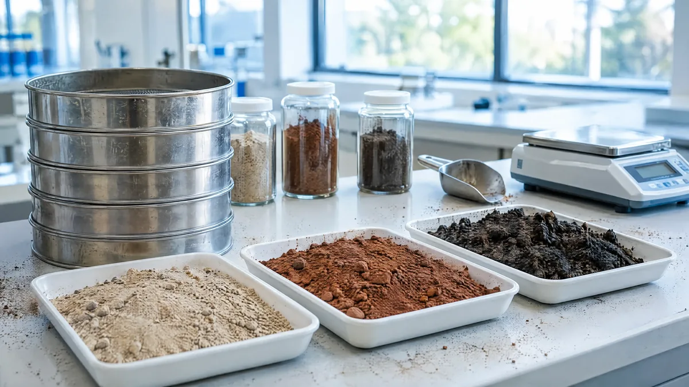
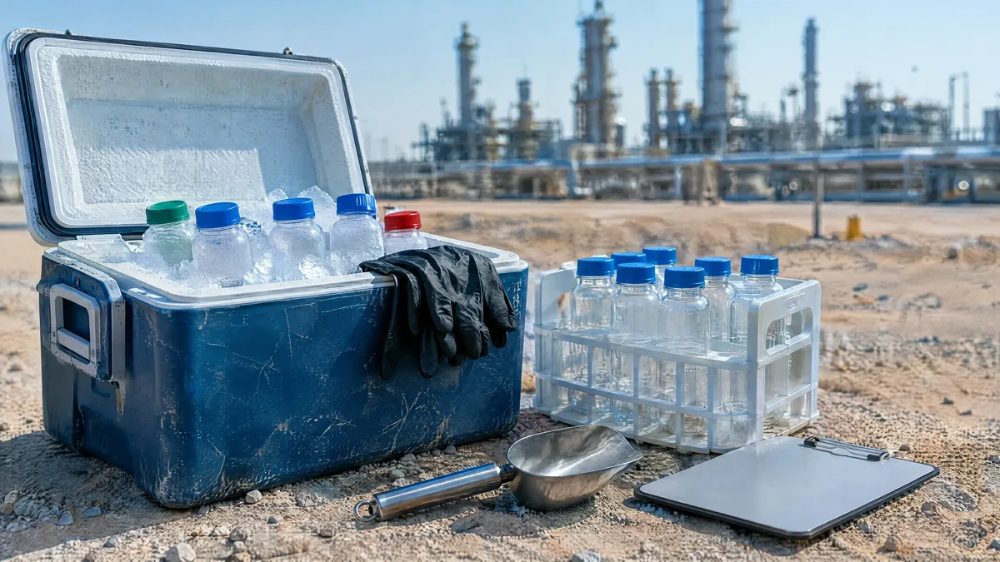

Laboratory, measurement & accreditation
Compliance claims need numbers behind them. We measure what your permit requires, to the method it requires, and report it in the form the regulator expects.
Water & Wastewater Testing
Comprehensive analysis of water and sewage samples against accredited standards.

ContaminationSoil & Sediment Testing
Analysis of soil and sediment characteristics and determination of contaminant levels.

Chain of custodyEnvironmental Sampling Services
Precise collection and preparation of environmental samples under chain-of-custody protocols.
Laboratory Analysis & Data Interpretation
Laboratory reporting with technical interpretation and a clear summary of what the data means.
Testing that carries weight
Results are only accepted from accredited parties. See all seven licences and accreditations →
Licensed across 20+ environmental activities
BluePrint is licensed and approved by the NCEC, the National Center for Waste Management (MWAN) and the Royal Commission for Jubail & Yanbu, spanning environmental studies and consulting, sustainability and corporate governance, industrial and hazardous waste management, landfill construction and lining, emergency response and site remediation.
Request our credentials